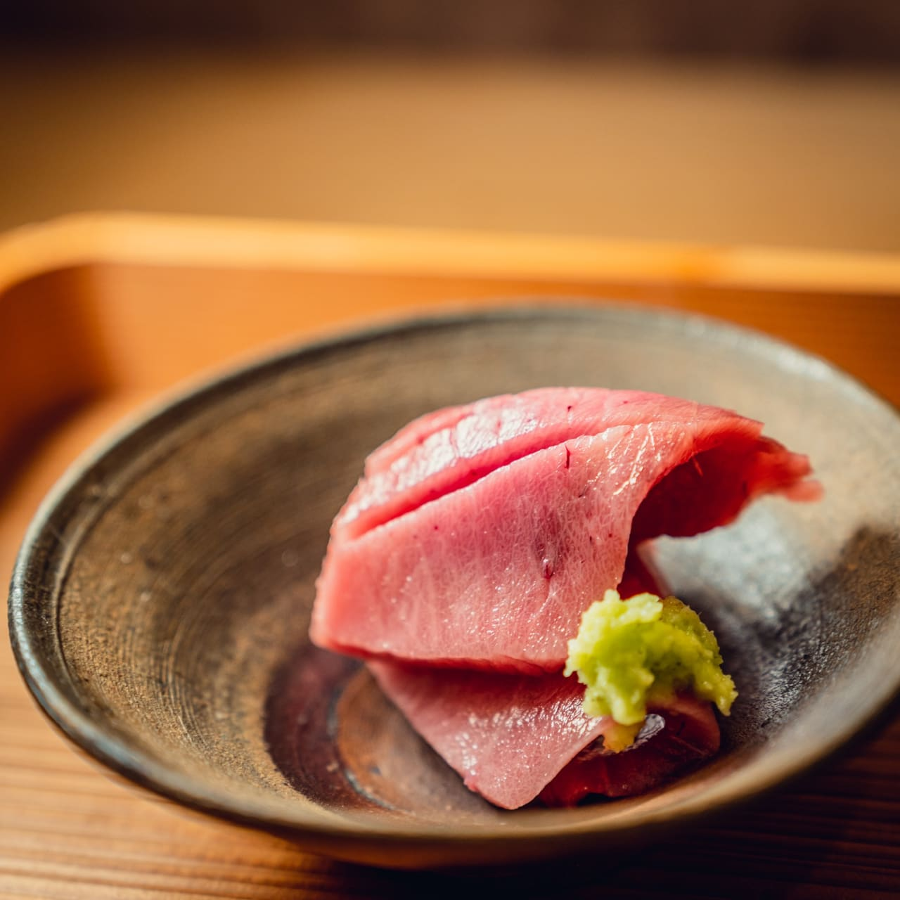
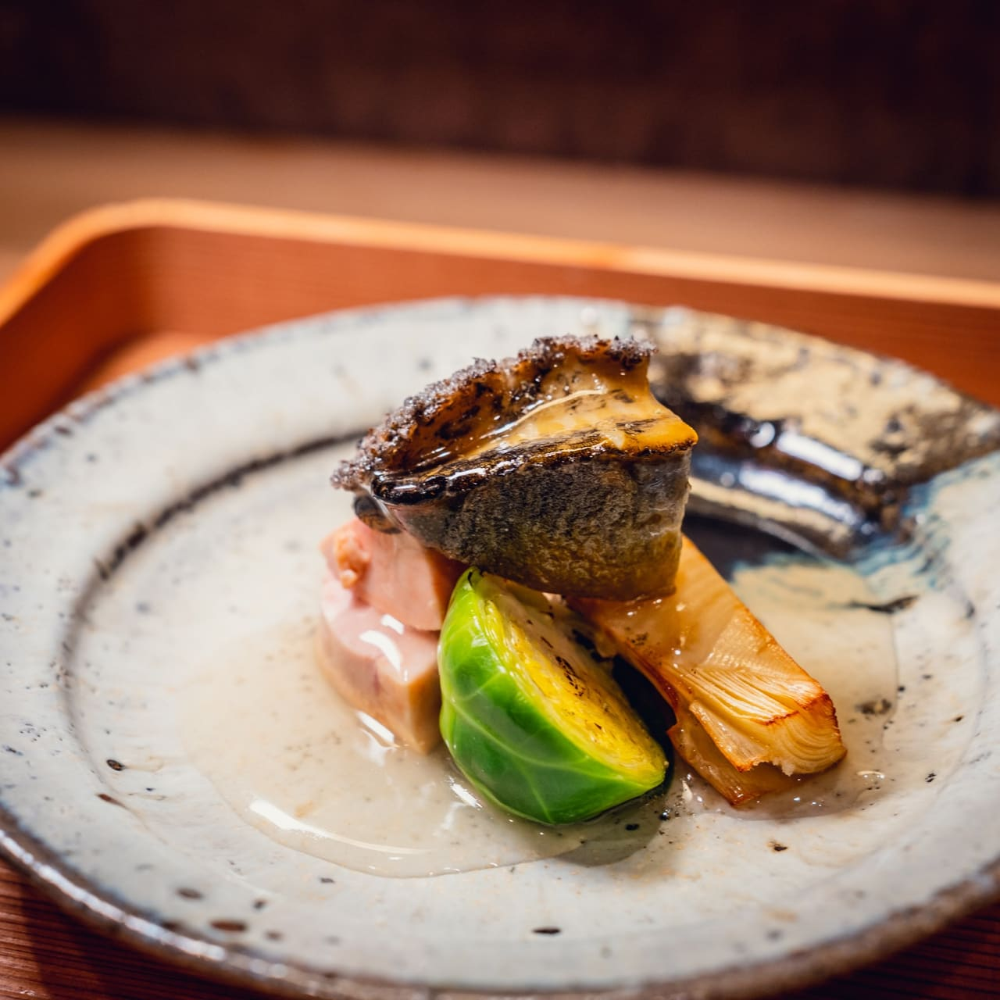
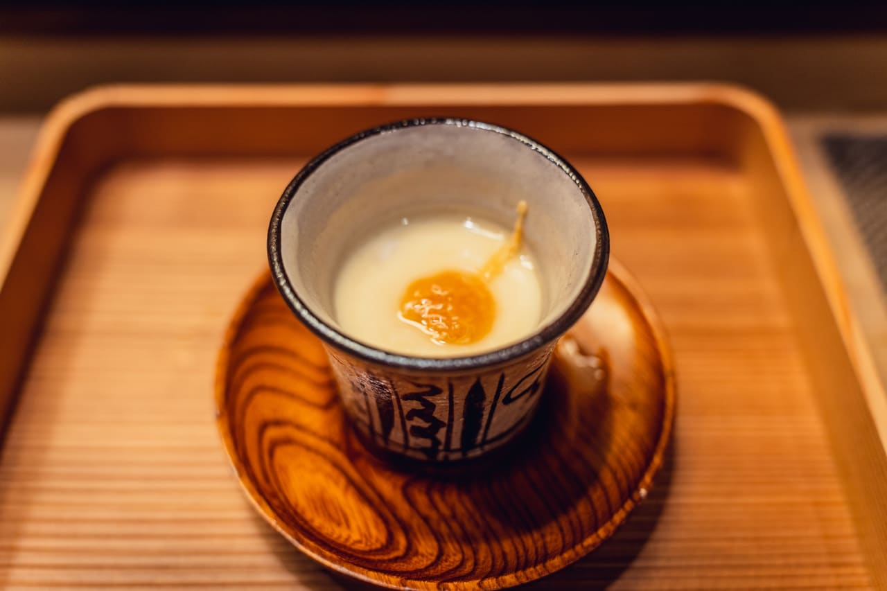
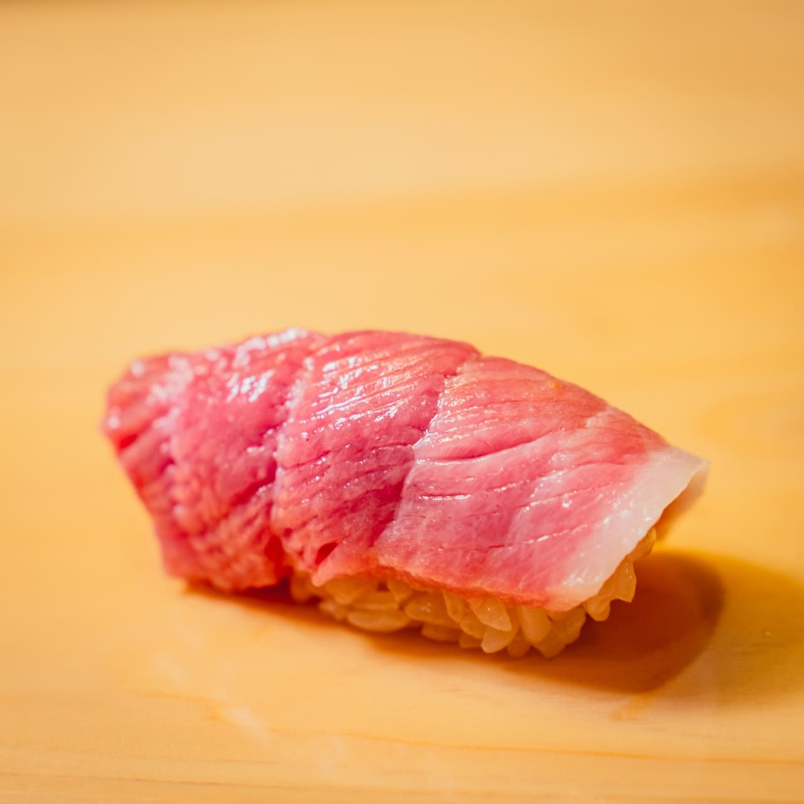
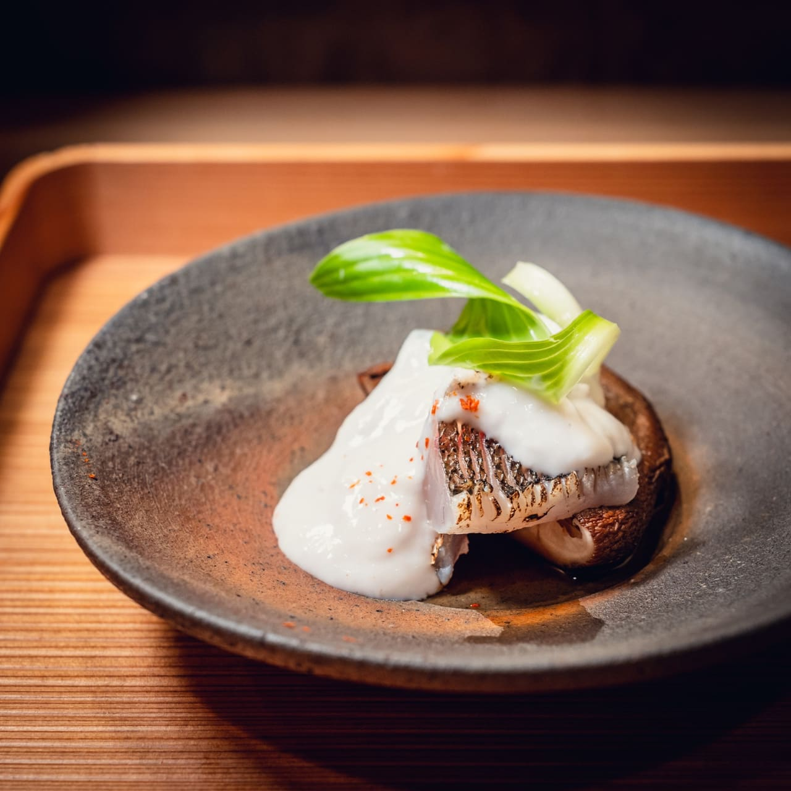
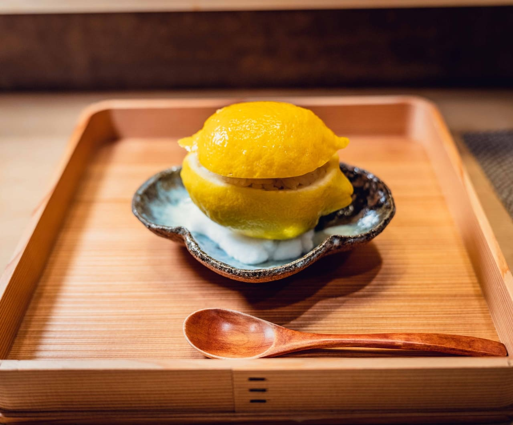

カウンター七席のみ。今日その日に届いた素材で、八品を一皿ずつ。
急がず、声を張らず、お任せください。
— 架空サンプルHPです。実在店舗・実在事例ではありません。
not tonight's course
— a sample only
その日の仕入れ次第






— これらは 見せ方サンプル用の献立例です。実在店舗の提供実績ではありません。
大きな店にはできない、
速さと、ちょうどよい距離で。
お一人さま、はじめての方も、
同じカウンターに座っていただけます。
— A note from the kitchen
店主 / Chef · Kazuki
日本酒・ワイン ペアリング 別途 ¥ 4,800（4〜5 杯）
七席のみのため、直前はご案内できない日があります。
空席・苦手食材・日本酒の好みは、LINE で一言だけお知らせください。初めての方も、お一人さまも歓迎です。
※ LINE ボタンはすべて MISERU 公式 LINE につながります（架空店舗の連絡先ではありません）。
— このサンプルでは、料理写真だけでなく「どんな時間を過ごせる店か」が伝わるように、献立・席の話・予約導線を整理しています。
MISERU は中小事業の Web を「整える編集室」。無料相談では、今の HP・Instagram を見て、方向性と合いそうな進め方・プラン目安までお返しします。具体的な改善案・写真選定・文章案・レイアウト案・ラフは、初回見立てシート（¥9,800〜）から対応します。